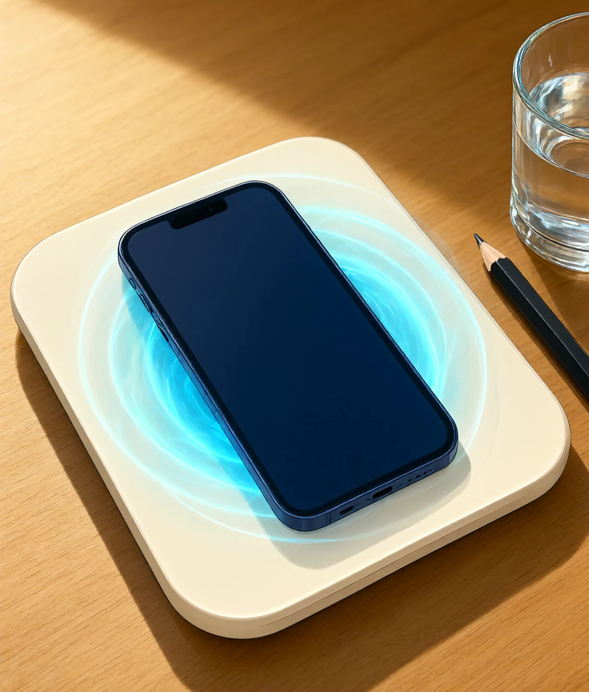
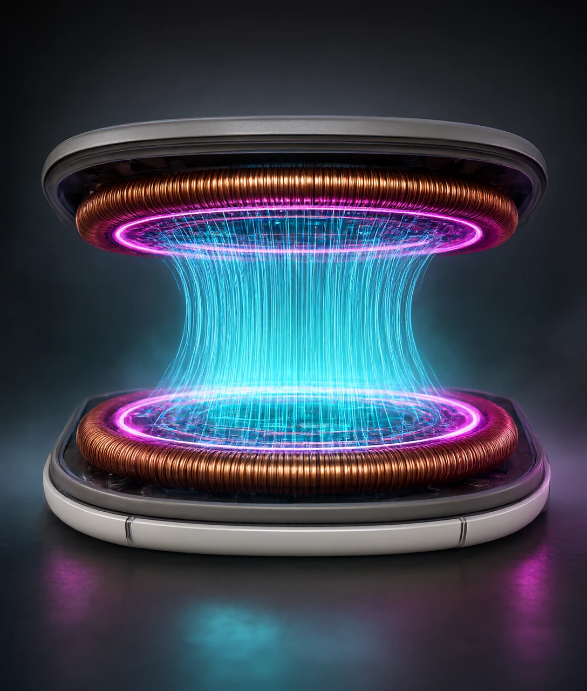
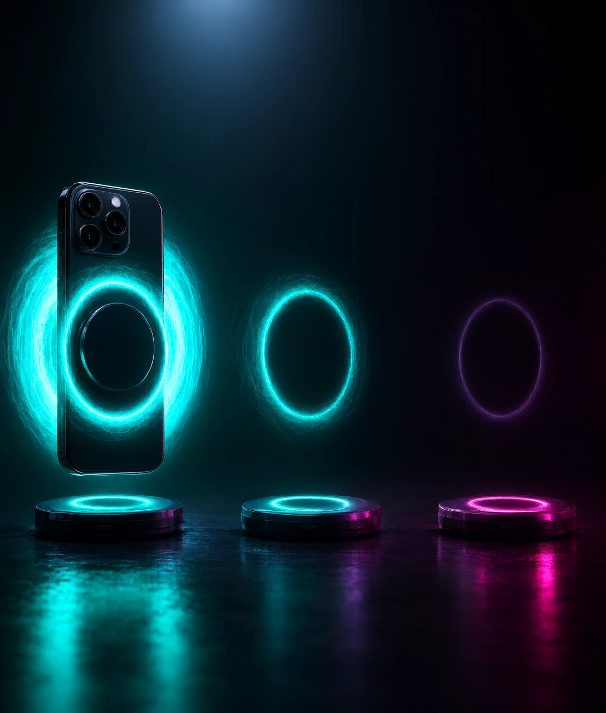
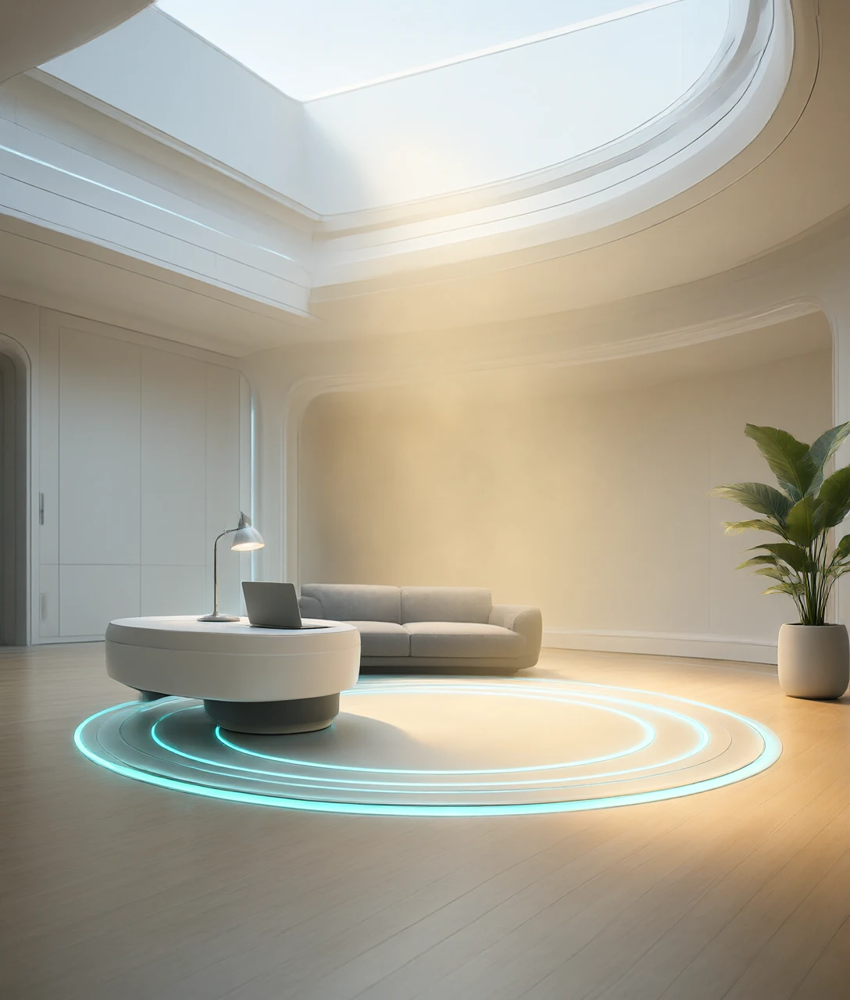
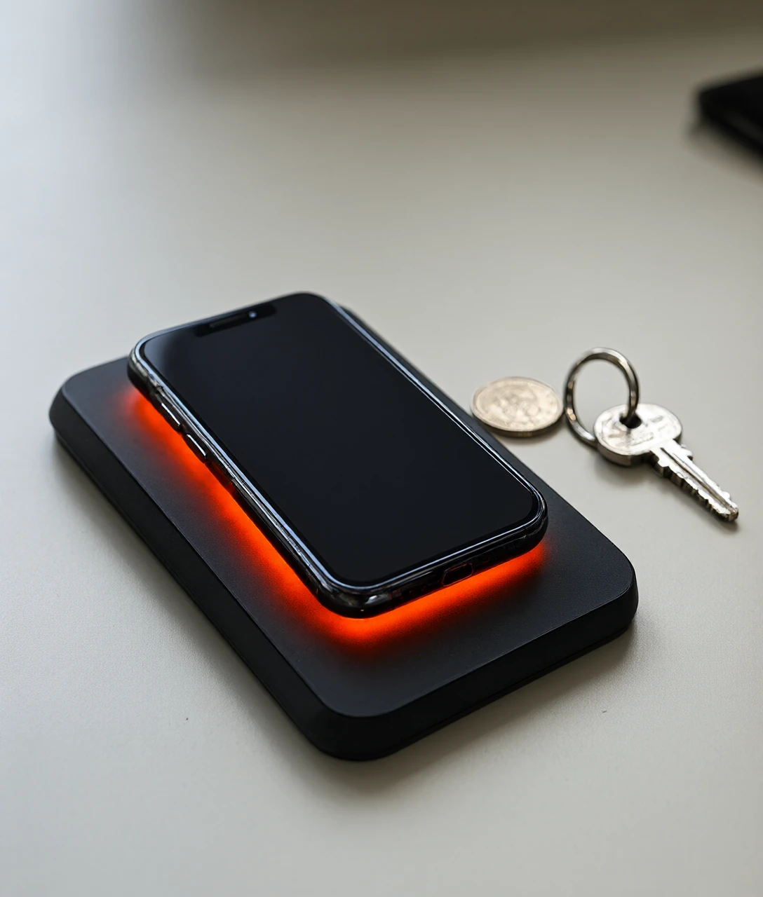

2017 年 9 月，一块 5 瓦的板子让手机不插线就能充。板子和手机之间，只隔 4 毫米。

2017 年 9 月，苹果在加州库比蒂诺发布 iPhone X。这台手机背面换成了玻璃，因为金属会挡住背后的东西。它支持一种 5 瓦的充电方式：把手机放上一块板子，不用插线。
同一时期，星巴克门店的桌面上，已经嵌进了一圈圈的充电标识。
放下手机，屏幕亮起，电池图标旁边多出一个小闪电。没有插头，没有接口，也没有「对准」这个动作。看上去像电自己飘了过去。
可你把手机往旁边挪两厘米。充电停了。垫一本书，隔开三厘米，也停了。
这就有点怪。一根两米长的充电线，能从桌子这头走到那头。一块板子，连一厘米都跨不过去。既然叫「无线」，这段距离为什么这么抠？
要回答它，得先看清板子里到底发生了什么。它不像广播电台那样把能量撒向四周。它更接近变压器，就像电线杆上那个嗡嗡响的铁盒子。不同的是，变压器的两半被强行拆开，中间塞进了空气。
接下来两章要回答的，是两个连着的问题。能量到底是怎么从板子钻进手机的？这个「钻」，为什么必须贴着才算数？
板子和手机里各有一个线圈，都是铜线绕成的扁圆盘。板子里那个，通的是每秒变十万次左右的交流电。
每变一次方向，线圈周围就冒出一次磁场。磁场就是一股看不见的力，能让附近的铁屑排成队。
这股力穿过空气，穿过手机后盖，落到手机里的线圈上。就像水从一根管子流进另一根，只是这里流的不是水，是力。
线圈里的电子被这股力推着走，于是有了电压。电压就是推动电荷往前走的压力，压力不够，电荷就不动。
这一套，物理学家叫电磁感应。法拉第在 1831 年第一次把它做出来，后来的发电机全靠它。
接下来的问题是：为什么非得用这么快的电，不能直接用家里的电？
家里的电是 50 赫兹，一秒钟变 50 次。线圈里被推出来的电压高低，跟磁场变化的快慢成正比。变化越慢，推出来的电压越低，低到几乎没用。
这就是为什么要把它提上去。频率，就是每秒变化的次数。提到 100 千赫兹，也就是每秒十万次，同样的线圈就能干活了，比家里的电快了两千多倍。
那再快些呢？不行。电流，就是电荷在导线里的流动。电流有个怪脾气：每秒变化的次数越多，它越往导线表面挤，真正导电的面积越小。挤出来的结果就是发热。
高到一定程度，线圈还会变成一根天线，把能量当电波射出去。射出去的能量收不回来，还会干扰旁边的设备。
所以法规给它画了个圈。2023 年，中国发布了一份《无线充电设备无线电管理暂行规定》。手机这类设备，只能工作在 100 到 148.5 千赫兹之间。
额定功率就是它能稳定送出的能量速度，上限是 80 瓦。换算一下，80 瓦的板子给一块 4000 毫安时的电池充电，十几分钟就能充满。这份规定从 2024 年 9 月 1 日起施行。
把这套流程串起来看，它其实就是一台被拆散的变压器。变压器靠一块铁芯把磁场圈住，几乎不漏。无线充电故意抽掉铁芯，让磁场走空气。走空气的代价，就是漏。
漏掉多少，取决于两个线圈隔多远。那么，为什么贴紧一点，它就能补回来？

线圈之间的距离，是这套系统里最敏感的一个数。
无线充电板的设计间隙，通常是 4 到 5 毫米。这个尺寸不是随便定的。它刚好够放下一层塑料外壳，再套一个普通手机壳。
为什么不能多给一点？因为磁场跑不远。一个线圈在空间里产生的磁场，强度随距离掉得非常快，大致按距离的三次方衰减。距离翻一倍，强度只剩八分之一。
这跟手电筒不一样。手电筒照十米，光还看得见；照二十米，只是暗了一点。磁场不是这样，它几乎被锁在线圈附近。
真实情况还要更麻烦。发射线圈和接收线圈之间，靠的是耦合。
好比两个人对喊：离得近，听得清；离得远，只剩嗡嗡声。耦合系数，就是这两个人听清彼此的程度。
手机和板子对准、贴紧的时候，耦合系数能做到 0.5 以上。拉开到 4 厘米，这个数会掉到 0.05 以下，效率基本崩掉。
能量在路上还要一层层损耗。适配器把家里的电转成低压直流，损失约一成。板子里的电路再把直流变回高频交流，又损失一些。磁场传过去、接收线圈收回来、手机里整流稳压、最后充进电池，每一道都要扣一点。
把这些乘起来，手机无线充电的总效率大概在 60% 到 80%。有线充电是 85% 到 95%。差的那十几个百分点，全部变成了热。
热是能摸到的。充一会儿，板子和手机背面都温温的，就是这个原因。
位置歪了更糟。漏出去的磁场没被接收线圈接住，就打在附近的金属上，在那里激起涡流，涡流生热。这就是为什么很多充电板会一直闪灯提醒你摆正。
那有没有办法把这段距离拉开？

2007 年，麻省理工学院的一个团队做了个实验。他们用了两个直径 60 厘米的线圈。两个线圈隔开 2 米，点亮了一盏 60 瓦的灯泡，效率大约 40%。
这个实验用的是另一种办法：磁共振。前面说的耦合，要求两个线圈贴得很近。磁共振不要求。
它让发射和接收两边振动在同一个频率上。好比两个音叉调成同一个音高，敲响一个，另一个会跟着响。
真实情况是：线圈自己有一个固有频率，由它的电感和电容决定。两边调到一样，能量就能在很弱的耦合下传过去，距离能拉到几十厘米。
代价是线圈必须做大，频率还得对得非常准。2007 年那套装置的线圈有 60 厘米宽，塞不进手机。
手机走的是另一条路：靠磁铁对准。
2023 年，无线充电联盟发布了 Qi2 标准，在充电板和手机背面各加一圈磁铁。它的活不是「吸住」，而是「对准」。磁铁把两个线圈的圆心强行拉到一条轴上，位置误差从一两厘米缩到几乎为零。
对齐的好处很直接：耦合系数上去了，效率上去了，发热降下来了。Qi2 标准起初定在 15 瓦，后来往上提到了 25 瓦。
2020 年苹果的 MagSafe 用的是同一套思路。它是 15 瓦，比当时通用的 5 瓦、7.5 瓦高出一截。代价是手机里多了一圈磁铁，机身重了几克。
那能不能干脆隔空几米充电？实验室里能做到，市面上还不行。这中间的差距，下一章说。

无线充电的方便是真的。但它不是免费的。
第一笔账是效率。前面算过，无线是 60% 到 80%，有线是 85% 到 95%。这就像用两只桶挑水，一只底下有个小孔，路上总要洒掉一些，而洒掉的水你照样付过钱。
换算一下：同样充进 10 瓦时，无线要从插座多取 2 到 4 瓦时。一台手机一年充 365 次，多耗的电大约 1 到 2 度。差不多是一盏 10 瓦的 LED 灯连开一个星期。
第二笔账是发热。效率差的那部分不会消失，它变成热。夏天把手机放在板上充一夜，电池长期处在 35 摄氏度以上，老化会加快。
第三笔账是异物。板子上落了一枚硬币、一串钥匙，或者一张带芯片的卡，磁场会在金属里激起涡流，几十秒就能烫手。所以正规的充电板都带异物检测，靠监测线圈的电感变化或者温度来判断，发现异常就断电。
这一条目前还没有完全解决。轻薄的铝箔、锡纸，检测起来就容易漏过去，而这类东西恰恰常出现在快递包装和零食袋上。
第四笔账关乎另一群人。心脏起搏器、胰岛素泵这类植入设备，对磁场敏感。厂商的说明书一般会写，让使用者和充电板保持 15 厘米以上距离。
然后再加一条法规。中国把手机无线充电的额定功率压在 80 瓦以内。这不是技术做不到，是怕它干扰别的无线电业务。频率是公共资源，用的人多了就得排队。
那真正的隔空充电呢？用射频、用激光，把能量像信号一样发射出去，实验室里有原型。但它卡在同一个地方：能量越分散，能收回来的就越少；想提高功率，就得提高发射强度，而强度是有安全上限的。
所以今天这块板子的边界很清楚：它只在几毫米之内成立，超出这个范围就失效。它解决的是「不用插」这件事，不是「不用靠近」这件事。
至于长期贴在这么强的磁场旁边，对人体有没有影响，目前尚无定论。学界还在做跟踪调查，结论没有出来之前，谨慎一点不吃亏。
再往后一步，问题就变了：如果手机能自己挪到充电板上，那还需要人动手把它放上去吗？

无线充电板和手机之间，能量主要靠什么传过去？
B 解析：发射线圈通高频交流电，产生变化的磁场，再在接收线圈里感应出电压。这是法拉第 1831 年就做出来的电磁感应。
为什么无线充电必须把手机贴得很近？
D 解析：线圈的磁场强度大致按距离的三次方衰减。距离翻一倍，强度只剩八分之一，耦合系数会低到传不动。
中国法规规定手机无线充电的额定功率上限是多少瓦？
C 解析：2023 年发布的管理暂行规定把上限定在 80 瓦，2024 年 9 月 1 日起施行。限制的原因是怕干扰其他无线电业务。
Qi2 标准里手机背后那圈磁铁，最主要的作用是什么？
A 解析：磁铁把线圈位置误差从一两厘米压到几乎为零。对齐之后耦合系数上升，同样的功率发热更少。
手机放在充电板上会发热，热量主要来自哪里？
B 解析：无线充电总效率约 60% 到 80%，比有线的 85% 到 95% 低。差出来的那部分没有凭空消失，全都变成了热。